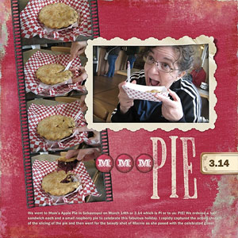
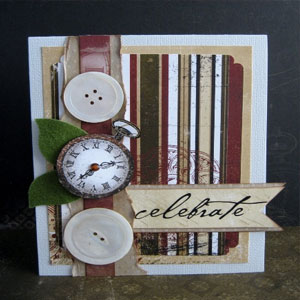
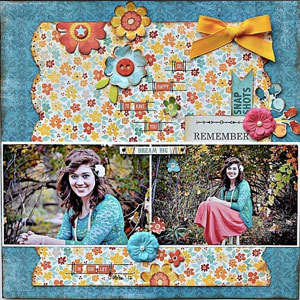

Scrapbooking
|  | How to make a scrapbook: 1. Think about choosing a theme. Some people like having a theme for the whole scrapbook, while others prefer having a theme for every page. When you start out, a theme per page might be a better idea, so you don't have to splash out on a scrapbook for each theme. 2.Collect all the photos, memorabilia, etc. from the event you are making a scrapbook/page about. |
|  | 3.Get some supplies that "relate" to that theme. If you prefer, you can keep some supplies ready that work for anything, but getting them specifically makes it more perfect and it looks better, and you can always keep the left over supplies. 4.Think about designs that are pleasing to the eye. Garish colours, too much glitter, pictures all over the place and difficult to read fonts are all conductive to an unpleasant experience for the eye and possibly a headache. |
|  | 5. Put the more important things in the middle in most cases. Occasionally it looks better the other way though, like if you were using part of a wedding veil as a border. Use your judgment and common sense.
|